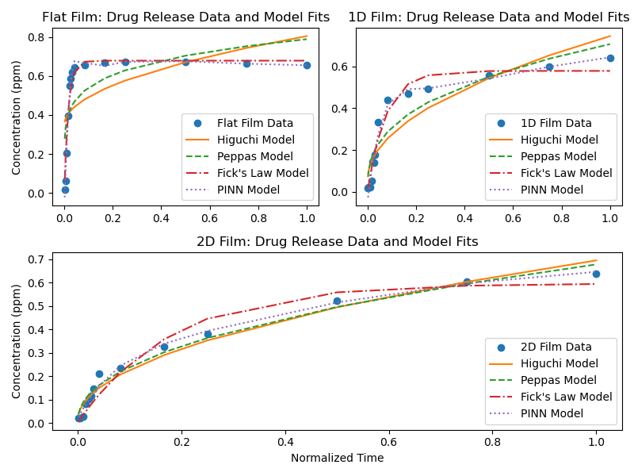
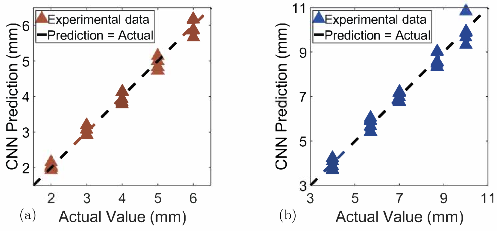
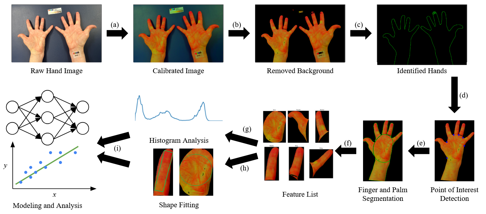
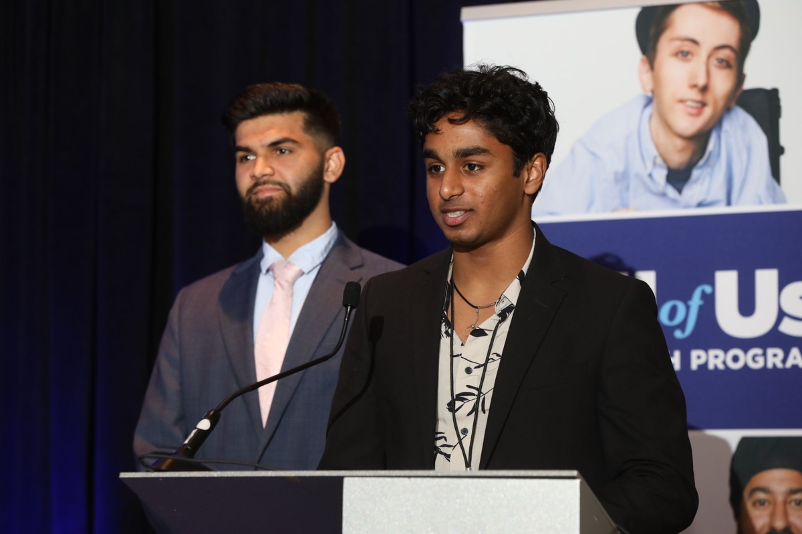
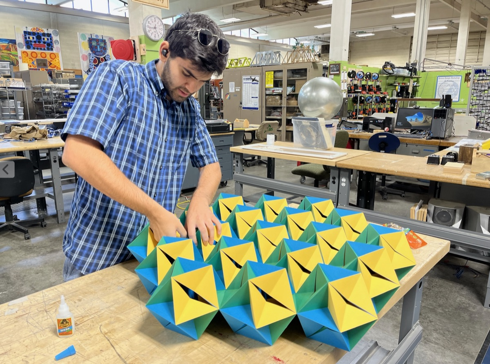
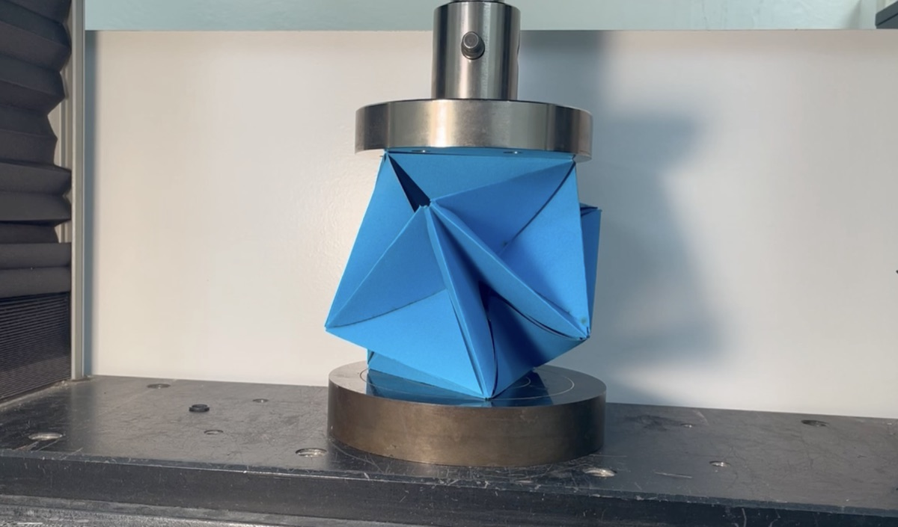
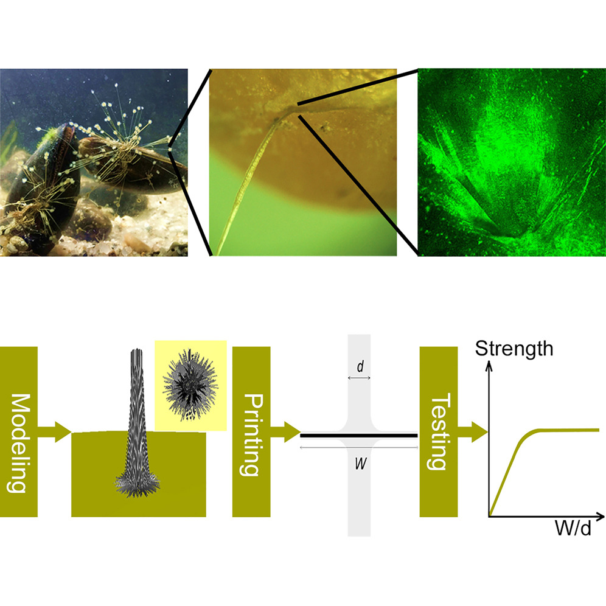

Research
Machine learning for biology and medicine, from physics-informed models of drug release to AI agents for biological discovery. The full publication list is on the home page, and my work in industry is on the Industry page.
Current work at Yale
AI agents and foundation models for biology
I build AI agents for biological discovery and study the foundation models they work with: accurate and efficient knowledge stores for agentic retrieval, rigorous evaluation of the hypotheses agents generate, and the interpretability and weight-space programming of single-cell foundation models such as Cell2Sentence-Scale (C2S-Scale). Papers from this work will be listed here once they are posted.
Research at Brown
Applied mathematics and physics-informed machine learning
Scientific machine learning: neural networks that are trained to obey a governing differential equation as well as to fit data, so they need far less data and extrapolate more sensibly than a purely data-driven model.
Physics-informed neural networks for drug release

Controlled-release films for patches, bandages and implants are usually characterised by running long release experiments. We built physics-informed and Bayesian neural networks that build Fick's diffusion law into training, so a short stretch of measurements predicts the long-term release. Benchmarked against the classical Fick, Higuchi and Peppas models on planar, wrinkled and crumpled films, the PINN reached an RMSE under 0.05 from the first 4% of the release data for planar films and from 25% for wrinkled and crumpled ones. Built in PyTorch and JAX. The paper joins the two Brown labs on this page: the modeling with Khemraj Shukla in Applied Mathematics, the release films from Vikas Srivastava's lab in Engineering.
D. A. Qureshi, K. Shukla, V. Srivastava. Drug release modeling using Physics-Informed Neural Networks. Journal of Drug Delivery Science and Technology 125, 108654 (2026).
Deep learning for crack detection, soft materials and drug delivery
Machine learning and mechanics for structural and biomedical materials: finding cracks hidden inside polymers, the mechanics of soft materials and hydrogels, and controlled-release films for drug delivery, which became the drug release paper above.
Measuring embedded cracks in polyethylene with ultrasound

High-density polyethylene is used in nuclear plant cooling pipelines, gas pipelines and biomedical implants, and cracks hidden inside it can grow until the part fails. We trained a convolutional neural network entirely on finite element simulations of ultrasound, then applied it to real microsecond ultrasound signals. With no experimental data in training, it predicted crack length with a mean absolute percent error of 3.2% and crack position with 3.8%.
D. Aleem Qureshi, V. Bellala, S. Niu, V. Srivastava. A Machine Learning Method to Measure the Embedded Crack Length and Position in High-Density Polyethylene Using Ultrasound Time Signal. ASME Journal of Nondestructive Evaluation, Diagnostics and Prognostics of Engineering Systems 9(1), 011004 (2026).
Soft materials and hydrogels
The mechanics of hydrogels for biomedical applications, and machine learning for finding structural defects in polymers.
Reading diet and health from photos of hands

Can a photo of someone's hand say something about their diet and health? The pipeline calibrates color across cameras and lighting, finds and separates each hand, splits it into fingers and palm from keypoints, and extracts color and shape features on a common scale. The next step, proposed but not yet done, is to predict health outcomes from those features. If you are interested in this work, please reach out.
Biomedical informatics and health disparities
This is where I came into biomedical informatics. With Neil Sarkar and Manan Pancholy, I worked on an explainable machine learning analysis of social and lifestyle determinants of mental health across racial cohorts, accepted as a podium abstract at AMIA 2026.
M. S. Pancholy, D. A. Qureshi, I. N. Sarkar. Comparison of Social and Lifestyle Determinants of Mental Health Across Racial Cohorts: An Explainable Machine Learning Analysis. AMIA 2026 Annual Symposium, podium abstract, Dallas (2026).
Industry research
Predicting healthcare provider engagement in SMS campaigns
A predictive model of how individual healthcare providers respond to SMS outreach, written up as a standalone study from the provider-behavior modeling behind products at Impiricus.
D. A. Qureshi, R. Chaudhary, K. S. Tan, O. Maoz, S. Burian, M. Gelber, P. H. Kang, A. G. Labouseur. Predicting Healthcare Provider Engagement in SMS Campaigns. arXiv:2511.17658 (2025).
Earlier work
Population health in the All of Us Research Program

Statistical and machine learning analysis of the All of Us population health data, looking at how maternal mortality and cardiovascular disease relate to social determinants of health. We presented the findings at CPGI 2023. Ketan and I later co-authored the blepharospasm poster on the home page, also from All of Us data.
A new geometric structure under load


I designed a new folded geometric structure and used mechanics and statistics to study how it carries stress and when it starts to fail, for materials and structures that have to survive the loads of space missions.
Why mussel byssal plaques are tiny yet strong

Mussels hold onto wave-battered rock with small adhesive plaques at the ends of their threads. Combining mechanical testing, 3D printing and numerical modeling, we showed why a small plaque, sized to its thread, already gives near-optimal attachment, and that the overall strength of the anchor depends more on the architecture of the thread network than on the size of each plaque.
D. A. Qureshi, S. Goffredo, Y. Kim, Y. Han, M. Guo, S. Ryu, Z. Qin. Why mussel byssal plaques are tiny yet strong in attachment. Matter 5(2), 710–724 (2022).